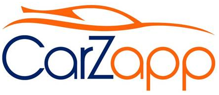

Introduction
CarZapp exists because a Car Dealer saw the opportunity for a contemporary approach to wholesaling across the automotive industry. Over the past two years, the app has been developed by a close knit group of professionals sharing more than 50 years of automotive and IT industry experience.
50 Years of Shared Industry Experience, from 3 three founders, has guided a team of developers and designers to produce this App. It is designed with multiple options to input data, as well as many options to communicate openly between users, in a hassle free way. Carzapp runs on Apple, Android and Windows mobile phones and desktop computers, running Windows OS.
CarZapp has been developed primarily by Australian Car Dealers for Australian Car Dealers in the interest of mutually effective way to buy and sell vehicles. The idea is universal , and is applicable in all countries. It will be made available in other countries over the next year.
Being in the industry ourselves, we understand the continuous and ever-increasing difficulty of sourcing quality stock to meet consumer’s demands.
Philosophy
The CarZapp philosophy is to keep the wholesale car business alive and well .
Mission
The CarZapp mission is to empower dealers to grow their network and business with an easy to use digital platform.
Quick Features
Carzapp enables Dealers to share inventory and connect with each other, within a Dealer exclusive platform.
A full-featured platform with easy communication points so whether you are buying or selling, Carzapp is a must have.
Manage Customer requests and share these with fellow dealers, to accelerate deals.
Move cars between dealers fast, as buy and sell opportunities appear across the network in real time.